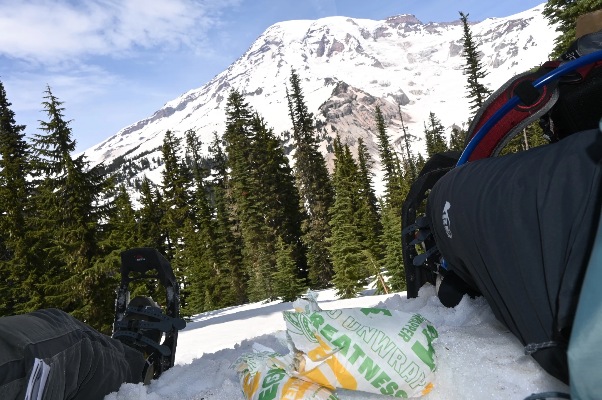

← Back to Arriving at Mount RainierArriving at Mount Rainier · Mount Rainier National ParkArriving at Mount RainierPhotographed by Constantine MoskesShare this photoSave to Pinterest← PreviousBack to collectionNext →